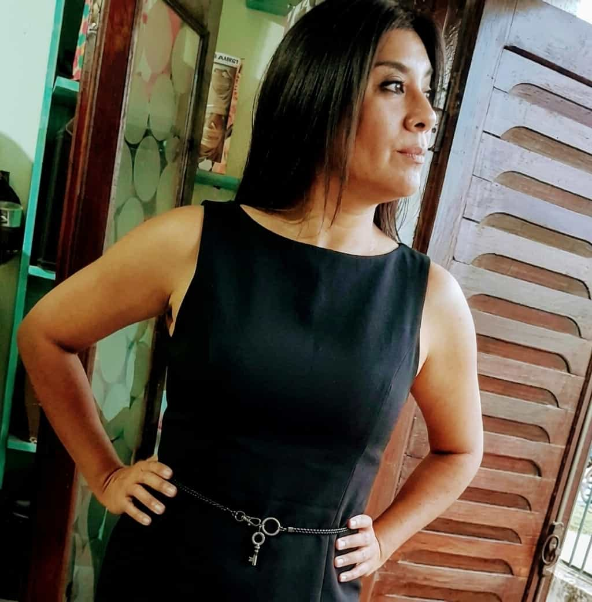
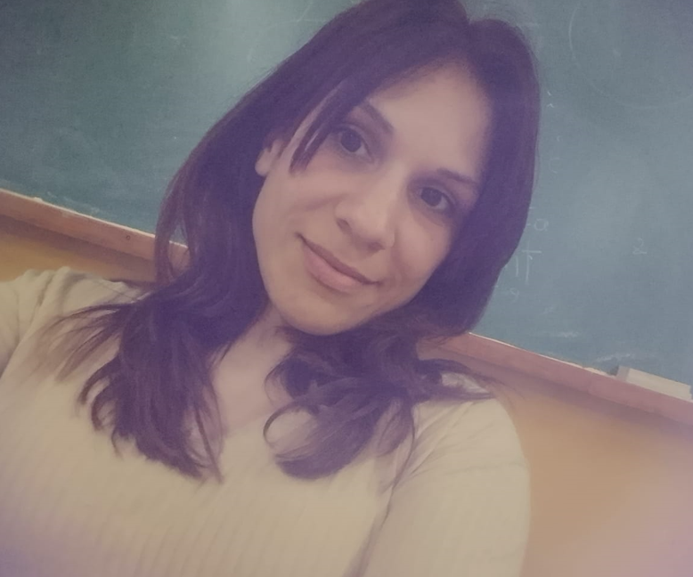
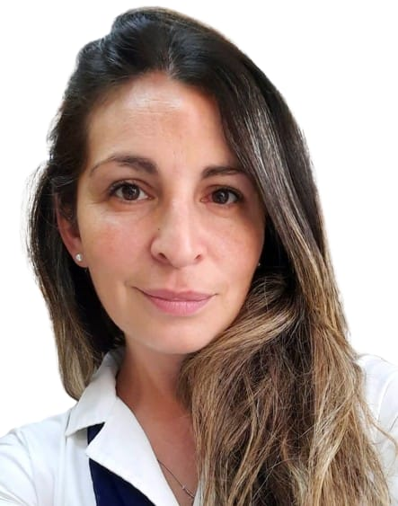
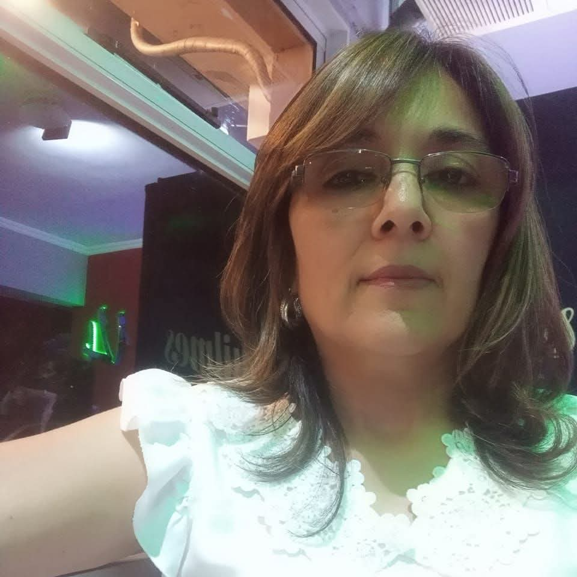
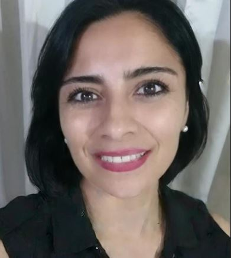
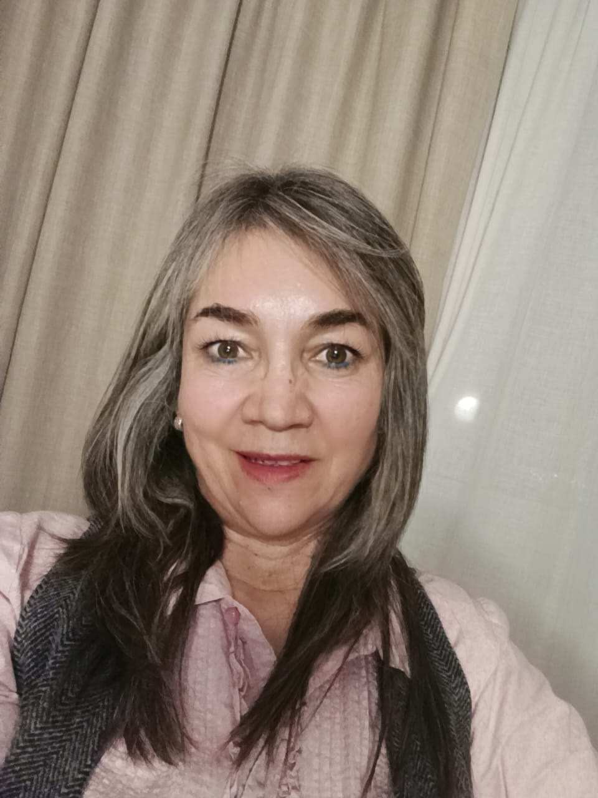
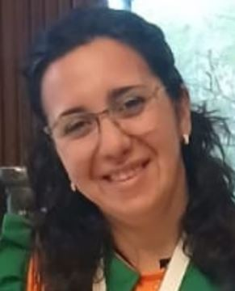
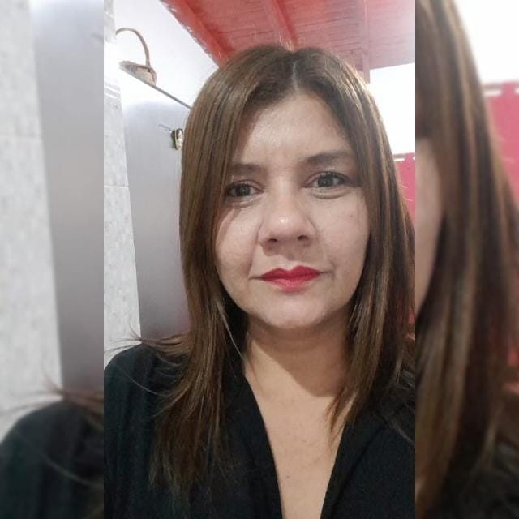
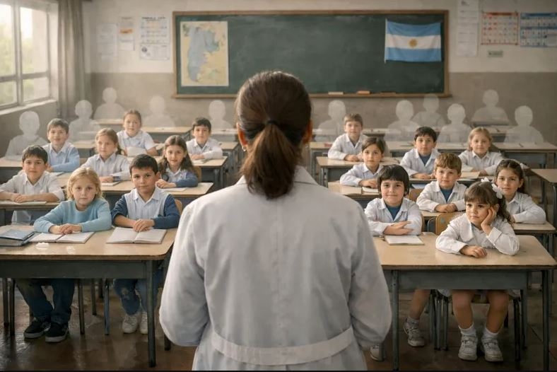

Nuestra historia
REDIM nació del compromiso profundo con la protección de las infancias y el empoderamiento de las mujeres. Somos una red de personas que creen que la educación, el acompañamiento y la defensa activa pueden transformar realidades.
R.E.D.I.M. es un dispositivo socioeducativo de prevención y acompañamiento ante la violencia y vulneración de derechos en el ámbito escolar, que brinda capacitación a docentes y alumnos.
La organización aspira a ser un actor articulador que construya entornos educativos inclusivos, participativos y libres de violencia mediante una cultura de respeto y equidad.
La institución se fundamenta en el respeto a los derechos humanos, la igualdad de género, la inclusión pedagógica y la transparencia en el acceso a la información.

Profesora de la Esc. Técnica Nº 4 de Añatuya, con más de 25 años de trayectoria docente. Comunicadora social con experiencia en prensa gráfica, radio y televisión.
Su labor, tanto en las aulas como en proyectos periodísticos, la llevó a recorrer diversos parajes de la provincia, escuchando historias que la convencieron de que la protección real requiere tanto de herramientas legales como de redes de contención emocional.
En 2026 se conformó REDIM junto a un grupo de profesionales comprometidos con la certeza de que la educación es el acto político más transformador que existe. Bajo su dirección, la organización acompañará a las comunidades que lo precisen en sus procesos formativos, para paliar las situaciones emergentes de violencia y contribuir a la recuperación integral, con una visión amplia pero, a la vez, con un enfoque profundamente regional.
"Cada historia que nos llega es un recordatorio de por qué este trabajo importa. En el aula y en el territorio, no somos solo educadoras, somos compañeras de camino."
Detrás de cada publicación, cada orientación legal y cada taller hay un equipo interdisciplinario comprometido con la causa. Psicólogas, educadoras y voluntarias de toda la zona que dan su tiempo y corazón a este proyecto.
Creemos en el trabajo colectivo como metodología y como filosofía. Porque así como acompañamos a quienes nos necesitan, también nos acompañamos entre nosotras.

Agostina Vidal
Psicopedagoga

Mariana Montoya
Prof. para la Enseñanza Primaria

Josefina Alzugaray
Lic. en EGB 1º y 2º ciclo. Prof. para la enseñanza primaria

Magali Contreras
Lic. en Educ. Primaria - Prof. Educ. Secundaria en historia

Monica Castillo
Lic. en educ. inicial

Maria Eugenia Ybalo
Prof. para la educ. inicial

Natalia Aranda
Lic. en Educ. Primaria - Prof. Educ. Secundaria en Lengua y Literatura

Si compartís nuestros valores y querés contribuir con tu tiempo, conocimiento o recursos, nos encantaría conocerte.